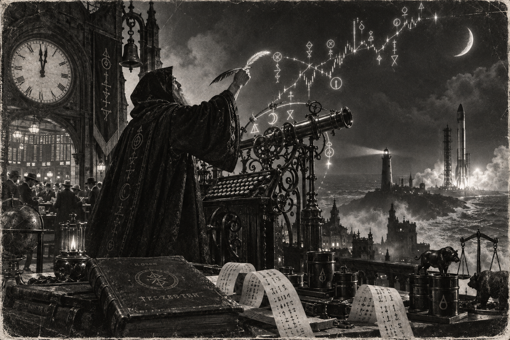

Morning Edition
6:00 AM CDTFinance & Markets
The Tape Opens Under Two Warnings
Monday. The U.S. session is live. Inherit Friday: S&P 500 7,656.98. Nasdaq 26,333.04. Dow 52,573.29. Overnight futures were weaker, Nasdaq leading, after AI chiefs asked to pace the frontier and crude jumped. The Fed meets Tuesday and Wednesday. Decision Wednesday. Markets have been pricing a hike, not a hold. A green Friday is not a Monday bid. Read the oil. Then keep the FOMC on the board.
Source: Bloomberg and Morningstar / Dow Jones, September 13–14, 2026Apollo Wants the Joints
Dow Jones: Johnson & Johnson is in talks to sell its hips-and-knees business, DePuy Synthes, to Apollo for about $20 billion. J&J wants to hive the unit off and keep the higher-growth work. A $20 billion talk is not a close. Read the term sheet. Then keep orthopedics on the board.
Source: Morningstar / Dow Jones, September 14, 2026The Barrel Jumped
TECHi's Monday print: WTI $102.37, up $2.32, or 2.32%. Brent $107.29. Spread $4.92. Hormuz talks in Oman, set for today, were postponed "in the interests of consensus." Diesel already printed a U.S. record past $6 a gallon on Friday. A tighter barrel is not a clear strait. Read both chokes. Then keep oil on the board.
Source: TECHi and The Hindu, September 14, 2026World & US
The Java Sea Search Holds
Virgo Transport 8 is still down. BBC: 243 aboard. Six dead. 107 rescued. About 130 still missing. Families wait at Trisakti Port. Ships and a helicopter are in the weather. A distress call is not a rescue. Hold the search. Then keep the names on the board.
Source: BBC, September 13–14, 2026Sweden Counts a Knife-Edge
Politico: with most results in, the opposition left bloc leads by three seats over Kristersson's alliance, which includes the Sweden Democrats. Exit polls had Andersson heading back. A late right-wing surge kept it too close to call. An election night is not a government. Wait for the remaining ballots. Then keep Stockholm on the board.
Source: Politico and Politico, September 14, 2026The Diesel Instruction
From Shannon, Trump told Zelenskyy to stop hitting Russian diesel. U.S. pump diesel printed past $6 a gallon on Friday. The IEA said Gulf diesel and gasoil exports in August were just over a quarter of the pre-Iran-war flow. Midterms are seven weeks out. A sideline quote is not a ceasefire. Read the IEA. Then keep the pump on the board.
Source: The Hindu, September 14, 2026
The Monday Open: the wizard does not celebrate the first green. He stashes the gain, then watches Kourou.
"Save first. Then celebrate the compile."- The Developer's Almanac
Sagittarius Horoscope
Justin, India Today says career and business will move fast, important plans get support, and the work is to organise the routine — diet included. Times of India adds the shine: recognition is likely, a long-carried wish may finally move, but stash the gain before you throw the party. Denver Post puts you in a flattering spotlight, Sun at the top of the chart, Mars amplifying it; Moon Alert is off after 3 a.m. EDT, Moon in Scorpio. Your Rat-year ingenuity is the stash, not the Monday ship. Lucky number 4. Lucky color yellow. Lucky hex: #F5C518. Lucky command: git stash.
Tech, AI, Space & Crypto
-
The Frontier Asked for a Brake
Dow Jones: Musk and Altman backed Anthropic's Dario Amodei on curbs for breakneck development. Altman even suggested OpenAI may delay its IPO to focus on safety. Trump still wants to "win AI." A safety chorus is not a freeze. Read the plan. Then keep the second look.
Source: Morningstar / Dow Jones, September 14, 2026 -
Falcon 700 Compiled Sunday
SpaceX flew the 700th Falcon mission from SLC-40 at 2:49 p.m. ET. Final three SES O3b mPOWER satellites. Booster B1080, flight 29, landed on A Shortfall of Gravitas. The constellation is complete. A milestone is not the next window. Inherit the Cape. Then watch Kourou tonight.
Source: Space.com, September 13, 2026 -
Bitcoin Held the $77,800 Door
TECHi shows BTC/USD at $77,874 as of 10:59 UTC, up $1,036, or 1.35%. Daily high $78,261. Daily low $76,453. Seven-day still off 1.57%. Do not chase a Monday candle into the Fed. Inherit the level. Stash the gain.
Source: TECHi, September 14, 2026 -
Vega-C Flies Tonight
Avio Vega-C, mission VV30, targets 9:21 p.m. EDT from Kourou with Sentinel-3C and FLEX. Crew-13 remains TBD after Dragon Grace's oxidizer leak. Starship Flight 14 slipped to NET September 18. A Monday night window is a real compile. Watch French Guiana, then keep late September on the board.
Source: Spaceflight Now, September 14, 2026
Morning Compile
- The tape opens under AI and oil. The Fed meets Wednesday.
- Hormuz talks slipped. Sweden is a three-seat lead. The Java Sea search continues.
- Falcon 700 compiled Sunday. Vega-C flies tonight.
- Save first. Then run git stash.